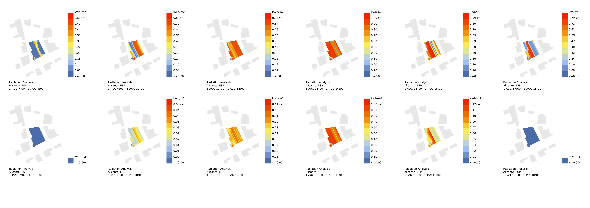
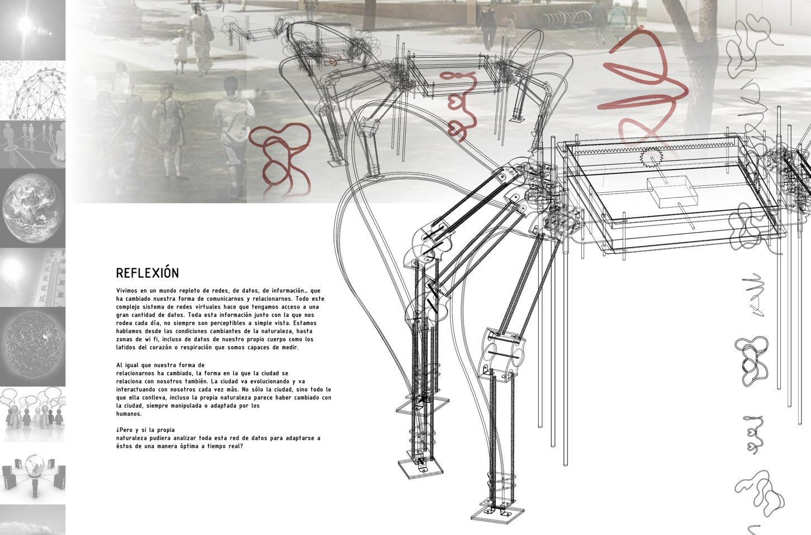
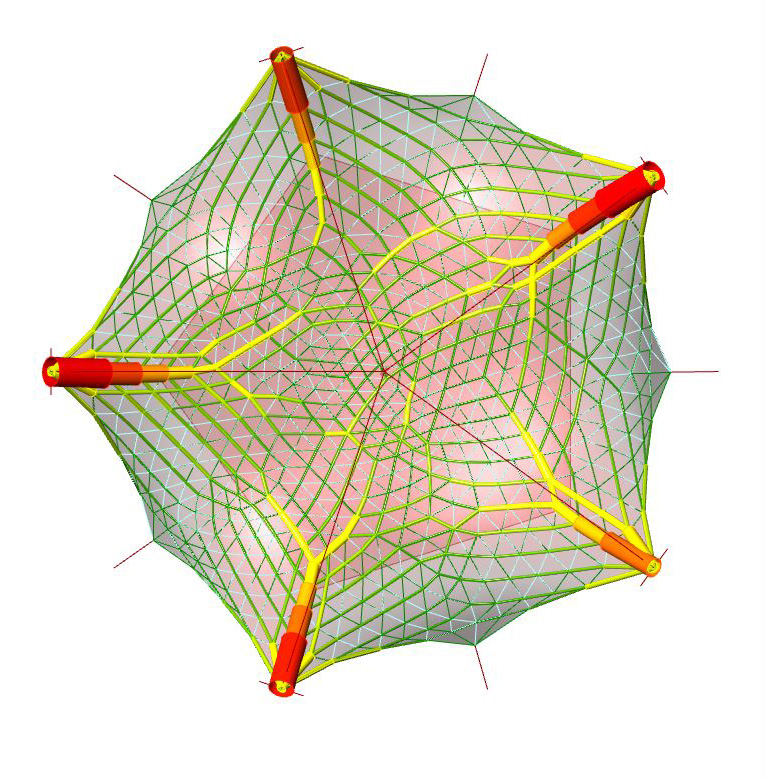
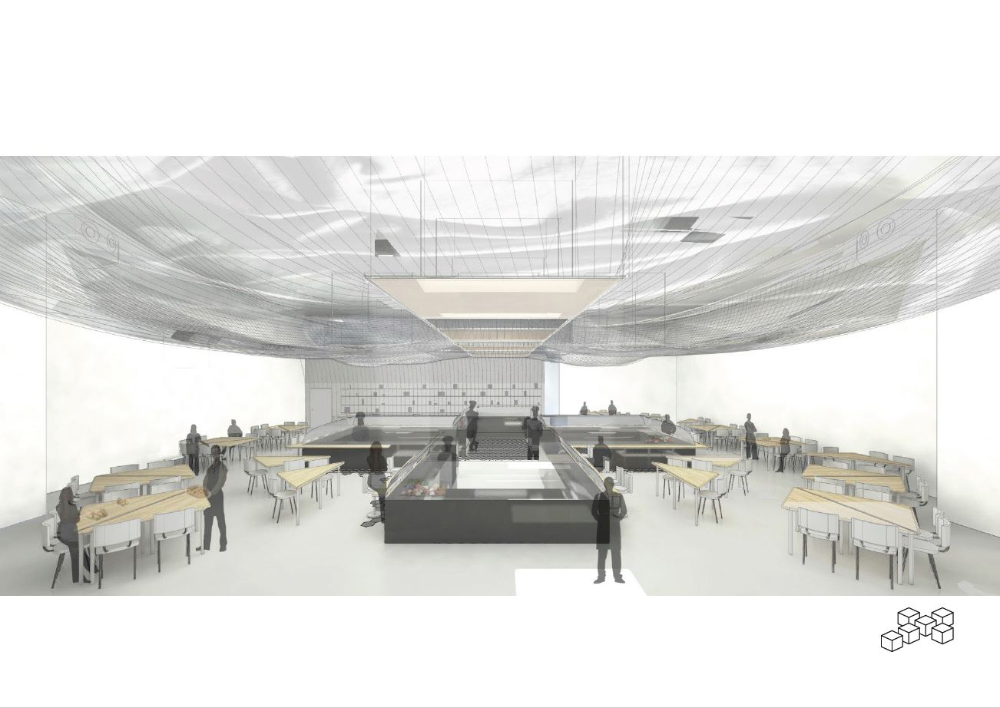
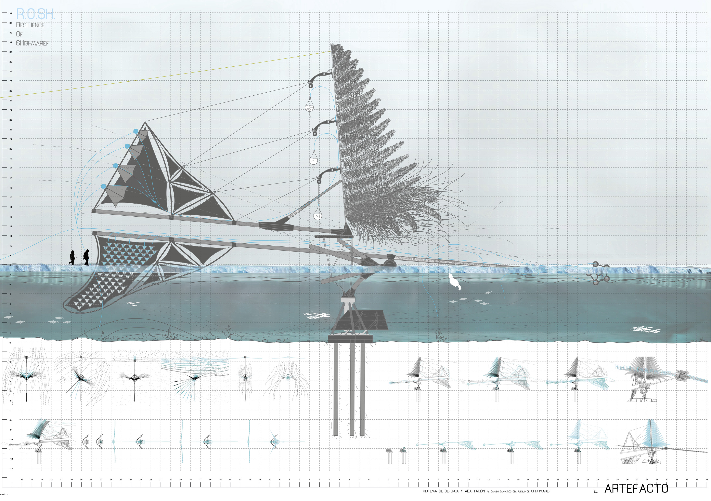
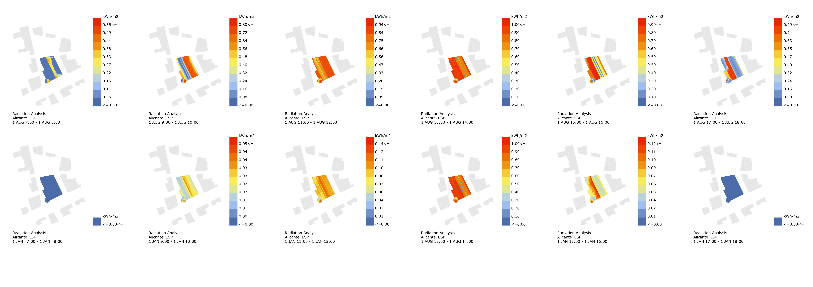
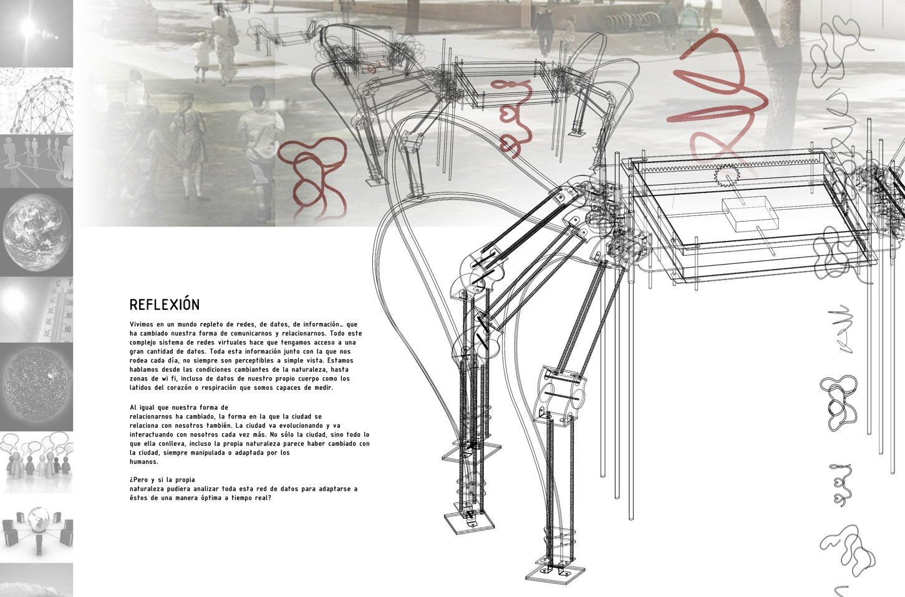
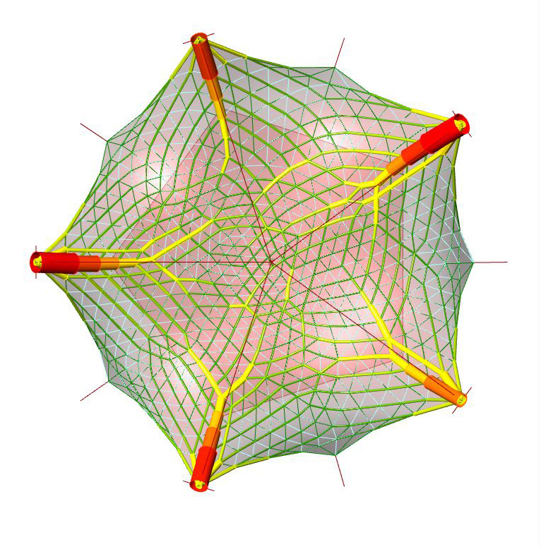
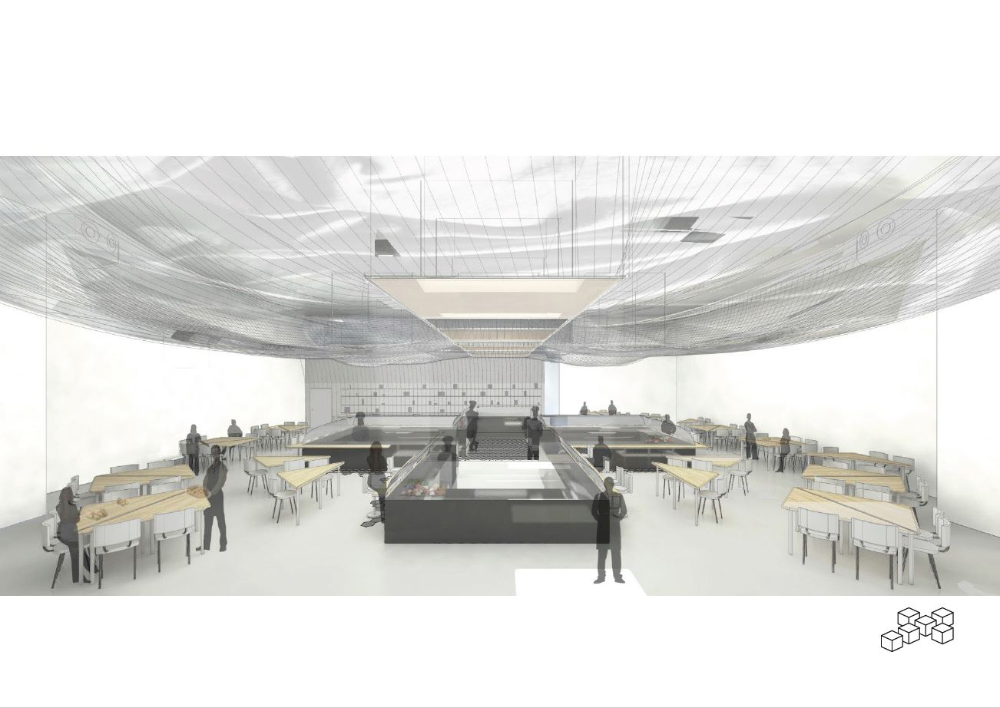
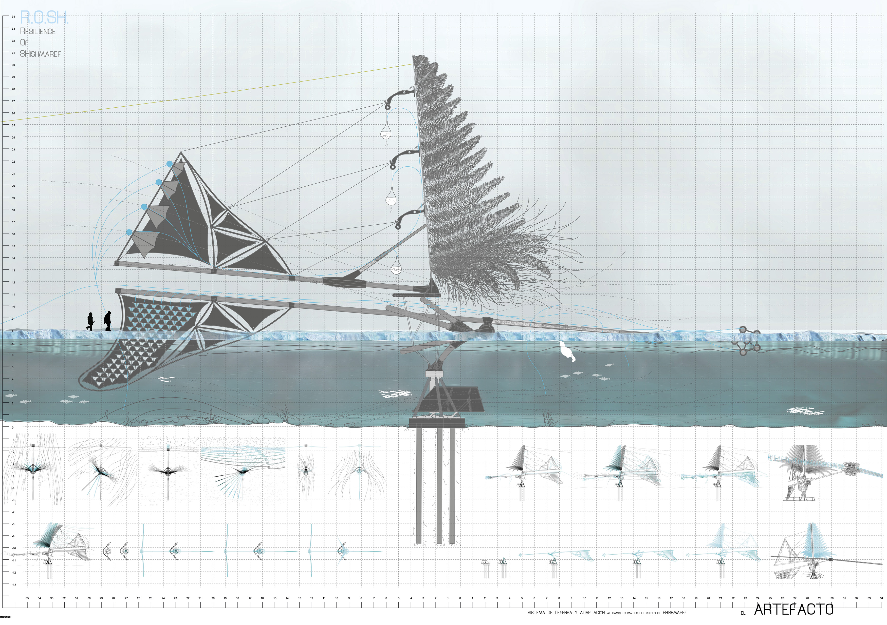

Nací en Alicante y estudié el Grado en Arquitectura en la Universidad de
Alicante. Un año después decidí mudarme y estudiar el Máster de BIM en
la Universidad Politécnica de Valencia.
Soy una persona creativa con ganas de diseñar, innovar, crear, solucionar y fabricar.
Soy una persona creativa con ganas de diseñar, innovar, crear, solucionar y fabricar.
· Graduado en Arquitectura Universidad de Alicante
· Máster en BIM Universitat Politècnica de València
· Curso 'IFC.js Crash Course' BIM Software Developer
adrianosorioramirez@gmail.com
659072894
Valencia / Alicante


 








